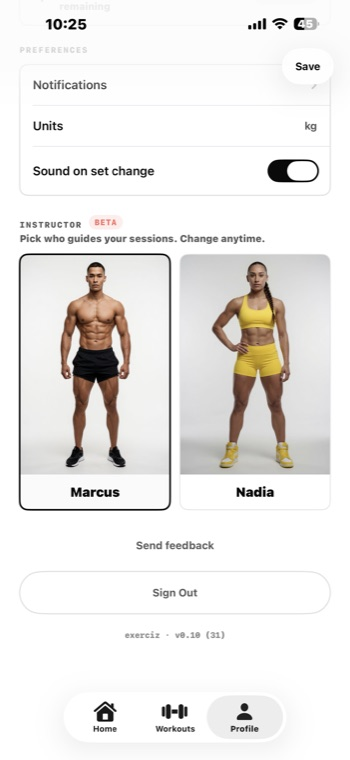
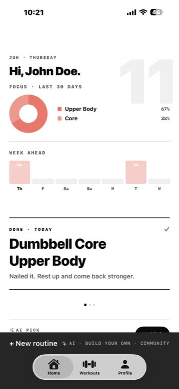
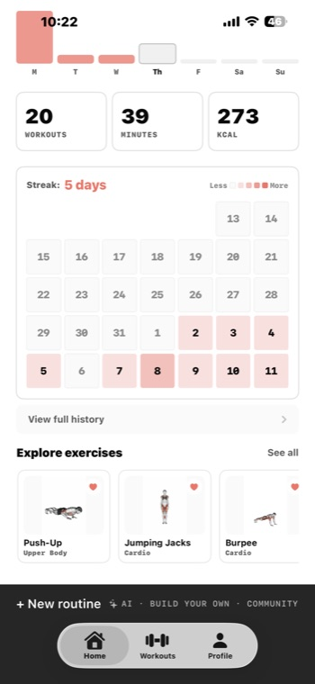
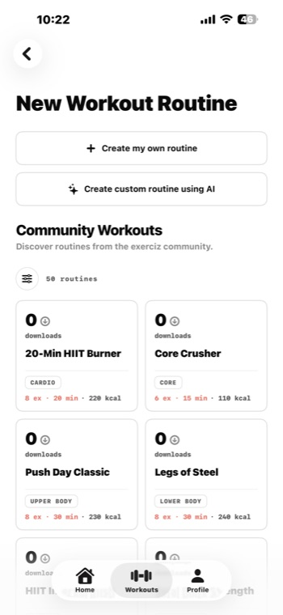
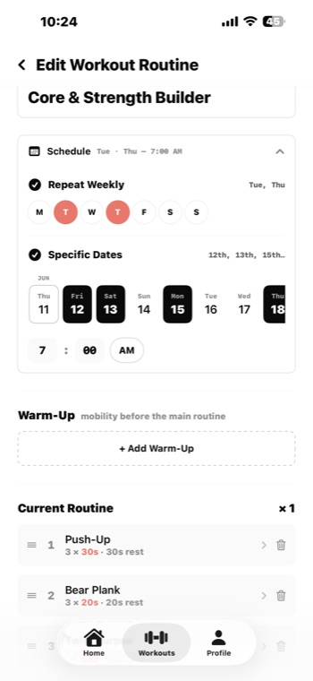
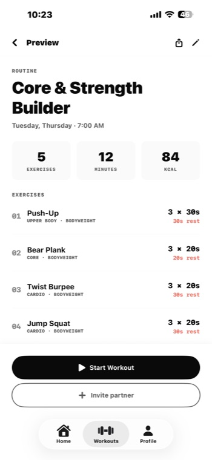
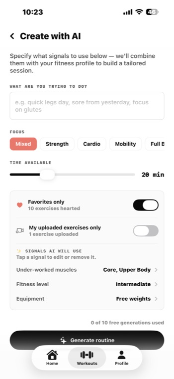
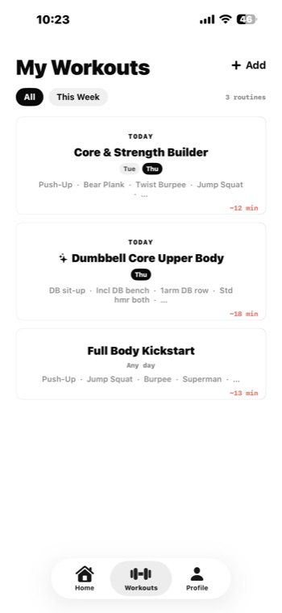
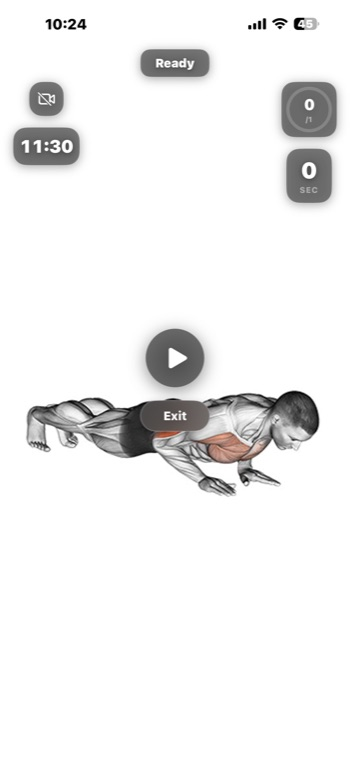
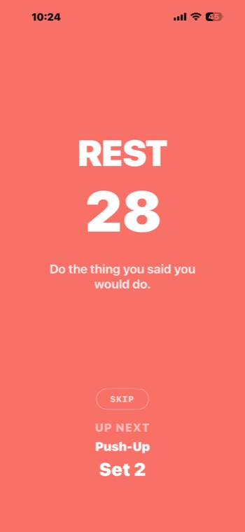

Exerciz · iOS workout app
Build your routine.
Run guided workouts.
Exerciz is a custom workout-routine builder for iPhone. Target the muscle groups you want with bodyweight, free weights, or equipment — then run guided, timed sessions with an on-screen instructor and keep every streak, minute, and session in one place. This guide walks through everything the app can do, including the AI routine generator.
Create routines
Pick exercises, set sets, duration and rest, and schedule them across your week.
Generate with AI
Describe what you want and Exerciz builds a tailored session from your profile and history.
Run guided sessions
A looping instructor demo, a self-camera tile, set timers and automatic rest periods.
Track everything
Streaks, minutes, calories and a 30-day activity heatmap — logged automatically.
Getting started
Sign in and set up your profile
Exerciz uses a one-time code instead of a password. Enter your phone number, type the code we text you, and you're in — there's nothing to remember.
- Enter your phone number
Pick your country code and type your number.
- Type the verification code
We send a one-time code by text. Didn't get it? Tap Resend.
- Tell us about you
Name (optional), body model, age range, fitness level, and a weekly goal.
- Pick your instructor
Choose Marcus or Nadia to guide your sessions — you can change this any time.
Once you're set up, you land on the Home tab. The bar along the bottom of the app switches between Home, Workouts, and Profile.

The home dashboard
Everything at a glance
Home opens on a clean editorial layout that puts today's plan and your recent progress front and center.


Focus breakdown
A 30-day ring shows how your training splits across muscle groups, so you can see what you've been hitting.
Week ahead
The days you've scheduled routines for are marked, so you always know what's coming.
Today's session
Your next scheduled routine sits up top with a one-tap start — or a "nailed it" card once it's done.
Streak & totals
Workouts, minutes and calories, plus a calendar heatmap of your last few weeks of activity.
From the bar at the bottom of Home you can also start a + New routine three ways — build your own, generate one with AI, or pull one from the community. More on each below.
Building a routine
Make a workout that's yours

Tap Add on the Workouts tab (or + New routine on Home). You'll choose how to start:
- Create my own — hand-pick every exercise.
- Create with AI — describe a session and let Exerciz build it.
- Community workouts — start from a routine someone else shared.
When you build your own, add exercises from the library and tune each one — how many sets, the duration of each set, and the rest in between.
Schedule it, warm up, and reorder
Open a routine's editor to set when and how it runs:
- Repeat weekly on the days you choose (M–Su), or pick specific dates.
- Set a time of day so it shows up under "today" when it's due.
- Add a warm-up before the main work and a cool-down after.
- Drag to reorder exercises, or swipe to remove them.
- Set how many times the circuit repeats.
Everything saves to your account automatically, so your routines follow you to any device you sign in on.

Preview before you start

Every routine has a preview with its schedule, an estimate of time and calories, and the full list of exercises with sets, duration and rest.
From here, tap Start Workout to begin a guided session — or Invite partner to train alongside a friend.
★ AI routine generator
Describe it. Get a tailored session.
Tap Create with AI and tell Exerciz what you're after — something like "quick legs day, sore from yesterday, focus on glutes." Exerciz combines your request with your fitness profile and recent history to build a session that fits.
What you control

Signals the AI uses
Below your request, Exerciz shows the signals it will factor in — tap any one to adjust or remove it before generating:
Tap Generate routine and Exerciz assembles the workout. Don't like it? Tweak a signal and generate again. Save it and it lands in My Workouts with an ✦ AI badge so you always know how it was made.
Heads up The free plan includes a set number of AI generations (the screen shows how many you've used, e.g. "0 of 10 free generations used").

- AI routines are fully editable — treat them as a starting point and adjust anything.
- The more you train, the smarter the "under-worked muscles" signal gets.
- Hearting exercises you love makes Favorites only generations sharper.
- Generated sessions sit alongside your hand-built ones in My Workouts.
Community workouts
Start from what others built
The Community list is full of routines shared by other people using Exerciz — things like 20-Min HIIT Burner, Core Crusher, or Push Day Classic.
- Each card shows the focus (cardio, core, upper body…), number of exercises, estimated time and calories.
- Download a routine to add it to your own Workouts, then tweak it however you like.
- Share your own: when you're proud of a routine, mark it shared and it appears here for others.
Your private routines and history are never shared unless you explicitly choose to share a routine.
Running a workout
Guided, hands-free sessions
Press Start Workout and Exerciz takes over the clock — looping a demo, counting your sets, and sliding into rest automatically so you can focus on moving.


Instructor demo
A seamless looping video of your chosen instructor performing the exercise, with the worked muscles highlighted.
Self-camera tile
Turn on the front camera to watch your own form next to the demo. Tap the camera icon to toggle it.
Set & rest timers
Each set is timed; rest periods count down full-screen and show the next exercise and set.
Audio cues
Optional sounds mark the change between sets so you can keep your eyes off the screen.
Skip & exit
Skip a rest when you're ready, or exit early — finished sessions log to your history automatically.
Partner workouts
Invite a friend from the routine preview to train the same session together.
Exercises & media
A growing library — plus your own
Exerciz ships with a library spanning yoga, bodyweight, free weights and equipment. Browse exercises from Home ("Explore exercises") or while building a routine, and heart the ones you love so they're easy to find — and so the AI can prioritise them.
Always something to show
Every exercise does its best to show you the movement: a video demo when one exists, a clear still image if not, and otherwise a written description with step-by-step instructions — so you're never left guessing.
Add your own
Record a custom exercise with your camera and drop it into any routine. Your recordings stay on your device unless you choose to share a routine that uses them.
History & stats
Watch the work add up
Finish a session and it's logged automatically — no manual entry. Your dashboard keeps a running tally:
- Workouts, minutes and calories totals.
- A streak counter to keep your momentum going.
- A 30-day heatmap — darker squares are bigger days.
- The focus ring on Home showing your muscle-group split.
Tap View full history to see every past session in a list.
Profile & settings
Make it feel like yours
The Profile tab is your control center:
- Instructor — switch between Marcus and Nadia any time.
- Units — show weights in kg or lb.
- Sound on set change — toggle the audio cue during sessions.
- Notifications — reminders for your scheduled routines.
- Music — connect a playlist so your soundtrack runs with your workout.
- Send feedback — tell us what you'd like to see.
- Sign out — and the app version is shown at the bottom.
Tips & FAQ
Good to know
How do I sign in — is there a password?
No password. Enter your phone number and type the one-time code we text you. If it doesn't arrive, double-check the number and tap Resend.
How many AI routines can I generate?
The free plan includes a set number of generations. The Create-with-AI screen shows your remaining count (for example, "0 of 10 free generations used").
Can I edit a routine the AI made?
Absolutely. AI routines save into My Workouts just like any other — reorder exercises, change sets and rest, add a warm-up, or reschedule it. The ✦ AI badge just marks how it started.
What if an exercise has no video?
Exerciz falls back gracefully: it shows a still image if there's no video, and a written description with step-by-step instructions if there's no image — so you always know the move.
Do my workouts sync across devices?
Yes. Your profile, routines and history are tied to your account, so signing in on another device brings them along. Large custom recordings stay on the device they were made on.
Is my data private?
Your routines, profile and history are private to your account. Nothing is shared with the community unless you explicitly choose to share a routine. See the Privacy Policy for details.
The app isn't behaving — what should I do?
Close and reopen the app and make sure you're on the latest version. If it persists, email support@exerciz.app with your device model, iOS version and a short description (a screenshot helps).
Support
We're here to help
Questions, bug reports or ideas? We usually reply within 1–2 business days.
support@exerciz.app
Or browse the full support page and privacy policy.
© 2026 Exerciz · exercizapp.github.io · Privacy · Support